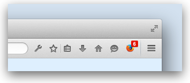

Add a button to the Firefox user interface. With this module you can create buttons that display icons and can respond to click events.
Usage
Creating buttons
To create a button you must give it an ID, an icon, and a label:
var { ActionButton } = require("sdk/ui/button/action");
var button = ActionButton({
id: "my-button",
label: "my button",
icon: {
"16": "./firefox-16.png",
"32": "./firefox-32.png"
},
onClick: function(state) {
console.log("button '" + state.label + "' was clicked");
}
});
By default, the button appears in the Firefox toolbar:
 However, users can move it to the Firefox menu panel using the toolbar customization feature:
However, users can move it to the Firefox menu panel using the toolbar customization feature:

Badged buttons
New in Firefox 36.
You can add a "badge" to a button using its badge property. This can be a number or a string, and you can update it at any time. By default the badge's color is red, but you can set your own color using the badgeColor property, specified as a CSS <color> value:
var { ToggleButton } = require("sdk/ui/button/toggle");
var button = ToggleButton({
id: "my-button1",
label: "my button1",
icon: "./icon-16.png",
onChange: changed,
badge: 0,
badgeColor: "#00AAAA"
});
function changed(state) {
button.badge = state.badge + 1;
if (state.checked) {
button.badgeColor = "#AA00AA";
}
else {
button.badgeColor = "#00AAAA";
}
}

Specifying multiple icons
You can specify just one icon, or multiple icons in different sizes.
If you specify multiple icons, Firefox will select the best-fitting icon based on the device screen resolution and the place the icon appears. For example, in the screenshots above, Firefox uses the small icon when the button is in the toolbar and the large icon when the button is in the menu panel. Read more about specifying icons in the reference documentation for the ActionButton constructor.
Responding to click events
You can respond to click events by assigning a listener to the button's click event. You can do this in the button's constructor, by assigning the listener to the onClick option. You can also add, or change, the listener afterwards:
var { ActionButton } = require("sdk/ui/button/action");
var button = ActionButton({
id: "my-button",
label: "my button",
icon: {
"16": "./firefox-16.png",
"32": "./firefox-32.png"
},
onClick: firstClick
});
function firstClick(state) {
console.log("You clicked '" + state.label + "'");
button.removeListener("click", firstClick);
button.on("click", subsequentClicks);
}
function subsequentClicks(state) {
console.log("You clicked '" + state.label + "' again");
}
The listener is passed a state object that contains all the button's properties.
You can generate click events programmatically with the button's click() method.
Disabling buttons
You can disable a button by setting its disabled property to true. A disabled button will not generate click events and its icon will appear disabled:

Updating state
You can update all the button's properties except for its id.
By default, the button has global state: that is, its properties are the same across all open windows and tabs, and updating them updates the button's state across all open windows and tabs.
You can set state to be specific to a window or tab using the button's state() method. To set state like this, call state() with 2 parameters:
- the first parameter is a
windowortabobject or as a shorthand, the string "window" for the currently active window, or the string "tab" for the currently active tab - the second parameter is an object containing the state properties you wish to update.
Here's an add-on with a button that disables itself when you click it, but only for the currently active window:
var { ActionButton } = require("sdk/ui/button/action");
var button = ActionButton({
id: "my-button",
label: "my button",
icon: {
"16": "./firefox-16.png",
"32": "./firefox-32.png"
},
onClick: disableForThisWindow
});
function disableForThisWindow(state) {
button.state("window", {
disabled: true
});
}
To fetch the state for a specific window or tab, call state(), passing in the window or tab you are interested in, and it will return the state:
var labelForActiveTab = button.state("tab").label;
To learn more about this, see the API documentation for state().
Destroying buttons
When you've finished with a button, destroy it by calling its destroy() method. After that, any attempts to access any of its properties or to call any of its methods will throw exceptions.
Globals
Constructors
ActionButton(options)
Creates an action button.
Parameters
options : object
Required options:
| Name | Type | |
|---|---|---|
| id | string |
The button's ID. This is used internally to keep track of this button. The ID must be unique within your add-on. |
| label | string |
The button's human-readable label. When the button is in the toolbar, this appears in a tooltip, and when the button is in the menu, it appears underneath the button as a legend. |
| icon | url, string, object |
One or more icons for the button. You can specify this in one of three ways:
var { ActionButton } = require('sdk/ui/button/action');
var self = require("sdk/self");
var button1 = ActionButton({
id: "my-button1",
label: "my button1",
icon: self.data.url("firefox-16.png")
});
var button2 = ActionButton({
id: "my-button2",
label: "my button2",
icon: "./firefox-16.png"
});
var button3 = ActionButton({
id: "my-button3",
label: "my button3",
icon: {
"16" : "./firefox-16.png",
"32" : "./firefox-32.png",
"64" : "./firefox-64.png"
}
});
If you use the final form, Firefox will automatically choose the best-fit icon for your button, depending on the device screen resolution and where the button is in the UI. On a device with a "normal" screen resolution, the toolbar has space for 18 x 18 pixels and the menu panel has space for 32 x 32 pixels. On a high resolution screen (such as a HiDPI display), these are doubled to 36 x 36 and 64 x 64 pixels, respectively. So you can supply three icon files: icon: {
"16": "./addon16.png",
"32": "./addon32.png",
"64": "./addon64.png"
}
This will look fine in both toolbar and menu panel, and for both screen resolutions. However, the icons in the toolbar will not quite fill the space available, so you can instead supply four icons: icon: {
"18": "./addon18.png", // toolbar icon non HiDPI
"32": "./addon32.png", // menu panel icon non HiDPI
"36": "./addon36.png", // toolbar icon HiDPI
"64": "./addon64.png" // menu panel icon HiDPI
}
|
Optional options:
| Name | Type | |
|---|---|---|
| disabled | boolean |
Determines whether the button is disabled. Disabled buttons appear disabled in the UI, and do not respond to clicks. Defaults to false. |
| onClick | function |
Click handler for the button. |
| badge | Number or String |
New in Firefox 36. Badge to attach to the button. The badge can contain as many characters (or digits) as you like, but only the first four will be displayed. |
| badgeColor | CSS <color> value |
New in Firefox 36. Color for the badge. If |
ActionButton
Methods
click()
Click the button. This will cause the button to generate the click event:
var { ActionButton } = require('sdk/ui/button/action');
var button = ActionButton({
id: "my-button",
label: "my button",
icon: {
"16": "./firefox-16.png",
"32": "./firefox-32.png"
},
onClick: function(state) {
console.log("You clicked '" + state.label + "'");
}
});
button.click();
state()
Get or set the button's state for a specific window or tab.
By default, a button's properties are global, meaning that they are the same across all open windows and tabs, and that if you update these properties, then they are updated across all windows and tabs. But sometimes you want a button attached to one window (or tab) to have a different state to a button attached to a different window (or tab). That's what state() is for.
To set a button's properties for a specific window or tab, call state(), passing it the window or tab you want the property to apply to, and the property value to set. A special shortcut allows you to pass the string "window" or "tab" to select the currently active window or tab.
For example, if you have a button like this:
var { ActionButton } = require('sdk/ui/button/action');
var button = ActionButton({
id: "my-button",
label: "default",
icon: "./firefox-16.png"
});
You can change its label for only the currently active window like this:
button.state("window", {
"label" : "window-specific label"
});
You can change its label for only the currently active tab like this:
button.state("tab", {
"label" : "tab-specific label"
});
To fetch the button state for a specific window or tab, call state(), passing it the window or tab you're interested in, and it will return a state object containing all the properties for the button associated with that window or tab. Again. you can use the strings "window" or "tab" as shortcuts. For example, this add-on:
- creates a button with a default label
- opens a new tab
- sets a new label only for the new tab
- logs the result of accessing the global label, the window-specific label, and each of the 2 tab-specific labels
var { ActionButton } = require('sdk/ui/button/action');
var tabs = require("sdk/tabs");
var button = ActionButton({
id: "my-button",
label: "default label",
icon: "./firefox-16.png"
});
tabs.open({
url: "https://mozilla.org/",
onOpen: onNewTab
});
function onNewTab(tab) {
// Modify the label only for the new tab
button.state(tab, {
"label" : "tab-specific label"
});
// access the global label -> "default label"
console.log(button.label);
// access the window's label -> "default label"
console.log(button.state("window").label);
// access the first tab's label -> "default label"
console.log(button.state(tabs[0]).label);
// access the second tab's label -> "tab-specific label"
console.log(button.state(tabs[1]).label);
}
Setting a property won't affect a more-specific property setting. For example, if you have a window with two tabs, and you set a tab-specific label, then set the window-specific label, this will not overwrite the tab-specific label:
var { ActionButton } = require('sdk/ui/button/action');
var tabs = require("sdk/tabs");
var button = ActionButton({
id: "my-button",
label: "default label",
icon: "./firefox-16.png"
});
tabs.open({
url: "https://mozilla.org/",
onOpen: onNewTab
});
function onNewTab(tab) {
// Modify the label only for the new tab
button.state(tab, {
"label" : "tab-specific label"
});
// Modify the label for the window
button.state("window", {
"label" : "window-specific label"
});
// access the global label -> "default label"
console.log(button.label);
// access the window's label -> "window-specific label"
console.log(button.state("window").label);
// access the first tab's label -> "window-specific label"
console.log(button.state(tabs[0]).label);
// access the second tab's label -> "tab-specific label"
console.log(button.state(tabs[1]).label);
}
The best way to think of this is as a tree: the global state is the root, followed by the state for each window, followed by the state for each tab in a window. If a property value for a node in the tree has not been set explicitly using state(), then it inherits its value from the next level up. So if you have one window containing two tabs, and have set the button's label only for tab A, then tab B will inherit label's value from the window, and changing the value for the window will implicitly change the value for tab B.
To delete a tab- or window-specific state, assign null to the property. After that, the property will inherit its value from the less-specific state as before:
var { ActionButton } = require('sdk/ui/button/action');
var tabs = require("sdk/tabs");
var button = ActionButton({
id: "my-button",
label: "default label",
icon: "./firefox-16.png"
});
tabs.open({
url: "https://mozilla.org/",
onOpen: onNewTab
});
function onNewTab(tab) {
// Modify the label only for the new tab
button.state(tab, {
"label" : "tab-specific label"
});
// Modify the label for the window
button.state("window", {
"label" : "window-specific label"
});
// access the global label -> "default label"
console.log(button.label);
// access the window's label -> "window-specific label"
console.log(button.state("window").label);
// access the first tab's label -> "window-specific label"
console.log(button.state(tabs[0]).label);
// access the second tab's label -> "tab-specific label"
console.log(button.state(tabs[1]).label);
// Reset the tab-specific state
button.state(tab, null);
// access the second tab's label -> "window-specific label"
console.log(button.state(tabs[1]).label);
}
Finally, you can pass the button itself into state(). This is an alternative way to set or get the global state. The reason for using this, rather than setting properties individually, is that you can define an object with the properties to set in one place, then apply it to the global state with a single line:
const defaultState = {
"label": "default label",
"icon": "./default.png",
}
const differentState = {
"label": "different label",
"icon": "./different.png",
}
var { ActionButton } = require("sdk/ui/button/action");
var button = ActionButton({
id: "default-label",
label: "default label",
icon: "./default.png",
onClick: function(state) {
if (button.label == "default label") {
button.state(button, differentState);
}
else {
button.state(button, defaultState);
}
console.log(button.state(button).label);
console.log(button.state(button).icon);
}
});
Parameters
target : button, tab, window, string
- To set or get the global state, this needs to be the
buttoninstance. - To get or set window-specific state, this needs to be the
windowobject for which you wish to set a specific state, or the string "window" to select the currently active window. - To get or set tab-specific state this needs to be the
tabobject for which you wish to set a specific state, or the string "tab" to select the currently active tab.
state : object, null
Include this parameter only if you are setting state. It is an object containing all the properties you wish to set. For example:
button.state("tab", {
"label" : "tab-specific label",
"icon": "./tab-specific-icon.ico"
});
To reset state, pass null:
button.state("tab", null);
Returns
state : if you have passed the second state argument to make this function a setter, it returns undefined. Otherwise, it functions as a getter and returns the button's state for the specified object. This logs the state for the button associated with the currently active tab:
console.log(button.state("tab"));
This object represents a snapshot of the state at the time state() is called. It is not kept up to date with changes made to the button:
button.label = "foo"; var state = button.state(button); button.label = "bar"; console.log(state.label) // foo
on()
Add a listener to an event emitted by the button. The button only emits one type of event, click:
button.on("click", handleClick)
function handleClick(state) {
console.log("button '" + state.label + "' was clicked");
}
Parameters
event : string
The event to listen for. Action buttons only emit one type of event, "click".
listener : function
Function that will be called on click.
once()
Assign a listener to the first occurrence only of an event emitted by the button. The button only emits one type of event, click. The listener is automatically removed after the first time the event is emitted.
Parameters
event : string
The event to listen for. Action buttons only emit one type of event, "click".
listener : function
Function that will be called on click.
removeListener()
Removes an event listener. For example, this code is equivalent to once():
button.on("click", handleClick)
function handleClick(state) {
console.log("button '" + state.label + "' was clicked");
button.removeListener("click", handleClick);
}
Parameters
event : string
The event to listener is listening for. Action buttons only emit one type of event, "click".
listener : function
The listener to remove.
destroy()
Destroy the button. After calling this function, the button will no longer appear in the UI, and accessing any of its properties or methods will throw an error.
Properties
id
The button's unique ID. This is read-only.
label
The button's label.
icon
The button's icon or icons, as a URL, relative path, or object containing a set of key-value pairs.
disabled
Boolean property indicating whether or not the button is disabled.
badge
New in Firefox 36.
Value to attach to the button as a badge. May be a number or a string.
The badge can contain as many characters (or digits) as you like, but only the first four will be displayed.
badgeColor
New in Firefox 36.
Color for the badge, specified as a CSS <color> value.
Events
click
This event is emitted when a user clicks the button or your add-on calls the button's click() method.
Arguments
state : The button's state. This contains all the button's properties.
{kind=link}
{kind=link}
{kind=link}
{kind=link}
{kind=link}
{kind=link}